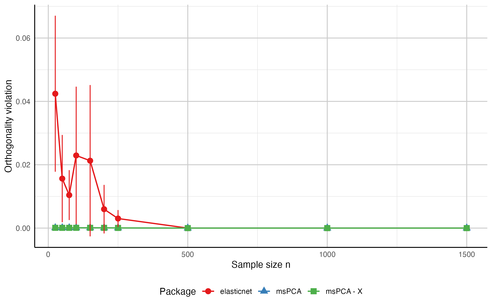
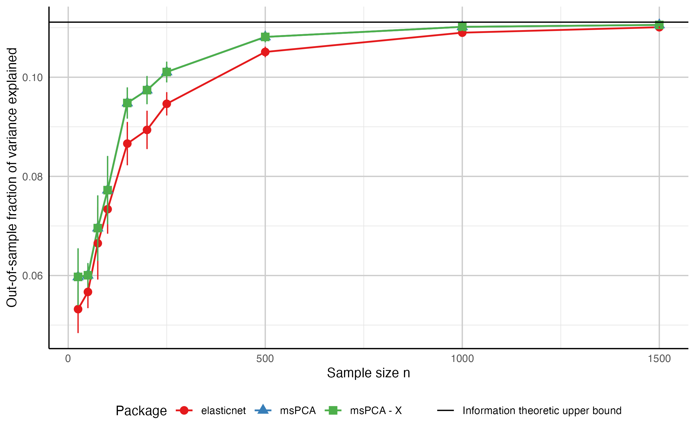

Sparse PCA with multiple principal components in R.
The msPCA package computes sparse loading vectors that explain a high fraction of variance while controlling non-redundancy across components. It supports two non-redundancy definitions:
- orthogonality of loading vectors,
- zero pairwise correlation of components.
Installation
Install from CRAN:
install.packages("msPCA")
library(msPCA)Install development version from GitHub:
install.packages("devtools")
devtools::install_github("jeanpauphilet/msPCA")
library(msPCA)Quick start
The main function is mspca().
Inputs (following the elasticnet convention, the data is a single argument M plus a type selector):
-
M: the data matrix, -
type:"Sigma"(default) treatsMas a covariance/correlation matrix (p x p);"X"treatsMas a raw data matrix (nobservations xpvariables), -
r: number of sparse principal components, -
ks: integer vector of lengthrwith sparsity budgets.
With type = "X", mspca() applies the algorithm to the data directly via the products t(X) %*% (X %*% beta) and never forms the p x p matrix, which reduces each iteration’s matrix–vector product from O(p^2) to O(np). Pass type = "X" when the number of variables greatly exceeds the number of observations; when n > p the dense type = "Sigma" path is cheaper.
Output fields:
-
x_best: sparse loading matrix (p x r), -
objective_value, -
feasibility_violation, -
runtime, -
feasibilityConstraintType: the constraint enforced, reused as the default for all diagnostics, -
nonredundancy: the pairwise violation matrices under both constraint definitions, computed at fit time.
Example on mtcars:
library(msPCA)
Sigma <- cor(datasets::mtcars)
set.seed(42)
res <- mspca(Sigma, r = 2, ks = c(4, 4), verbose = FALSE) # type = "Sigma" is the default
print(res)
summary(res)
feasibility_violation_off(Sigma, res$x_best, feasibilityConstraintType = 0)
fraction_variance_explained(Sigma, res$x_best)Equivalent workflow from the raw data matrix (no covariance matrix needed):
library(msPCA)
X <- as.matrix(datasets::mtcars)
set.seed(42)
# type = "X" treats the first argument as raw data; scale = TRUE operates on the
# correlation matrix, matching cor(mtcars) above.
res <- mspca(X, r = 2, ks = c(4, 4), type = "X", scale = TRUE, verbose = FALSE)
print(res)
summary(res)
fraction_variance_explained(cor(X), res$x_best)Documentation
| Article | What it covers |
|---|---|
Worked example on mtcars |
The basic workflow: fitting, print()/summary(), the two constraint types, diagnostics. Start here. |
| Case study: sparse factors in S&P 500 returns | A non-trivial application on the bundled snp500 data (423 stocks), showing how the choice of non-redundancy constraint changes the factors recovered. |
| Algorithm and implementation notes | The optimization problem, algorithm description in full, implementation and complexity, and guidance on choosing ks, the constraint type and the iteration budgets. |
| Benchmarking against other sparse PCA packages |
msPCA against seven competing packages, eight functions in all, on four real datasets, with the exact configuration used for each. Website only — not shipped with the package. |
The first three are installed vignettes: after install.packages("msPCA"), run vignette(package = "msPCA") to list them, or e.g. vignette("case-study-snp500", package = "msPCA").
Choosing parameters
ks is the main tuning input, and feasibilityConstraintType selects the notion of non-redundancy: 0 (default) enforces orthogonality of the loading vectors, 1 enforces zero pairwise correlation of the components. Use 0 when the loadings serve as a geometric projection basis, 1 when statistical decorrelation of the component scores is the priority.
For a fuller treatment — how to sweep ks and read the resulting sparsity/variance trade-off, when the two constraint types diverge, and how to set maxIter, maxRestartTPM and minRestartTPM — see Algorithm and implementation notes.
Synthetic benchmark
The script notebooks/notebook_synthetic.R compares msPCA with elasticnet::spca() on synthetic data across sample sizes and exports the figures below.


To regenerate these files, run notebooks/notebook_synthetic.R from the repository root. It writes to notebooks/; copy the two PNGs into man/figures/ afterwards, since that is where this README and the website read them from. For a broader comparison — seven competing packages on four real datasets — see the benchmarking article.
Main functions
-
mspca(M, r, ks, type = c("Sigma", "X"), ...): multiple sparse PCs. -
tpm(M, k, type = c("Sigma", "X"), ...): single sparse PC via truncated power method.
mspca() returns an object of class mspca with print() and summary() methods. Both read what they report from the fitted object, so neither needs the covariance matrix passed back in. summary() reports the non-redundancy violations under the constraint type used to fit; pass feasibilityConstraintType explicitly to inspect the solution under the other definition.
Useful optional arguments in mspca():
feasibilityConstraintTypefeasibilityTolerancemaxIterstallingTolerancetimeLimitTPMmaxRestartTPMminRestartTPM
Raw-data arguments (type = "X"):
-
center(defaultTRUE),scale(defaultTRUE, setFALSEfor covariance), -
divisor("n-1"for the sample covariance, the default, or"n").
Covariance-matrix validation arguments (type = "Sigma"):
-
checkPSD(defaultTRUE),symTolerance,psdTolerance.
Diagnostic functions
fraction_variance_explained(Sigma, U)fraction_variance_explained_perPC(Sigma, U)variance_explained_perPC(Sigma, U)-
feasibility_violation_off(Sigma, U, feasibilityConstraintType), for scoring loadings that did not come frommspca(). UnderfeasibilityConstraintType = 1the violation is normalized by the average variancetr(Sigma)/p, making it invariant to a rescaling ofSigma. -
print(sol_object, digits = 3)/summary(sol_object)
Included data
-
snp500: the market-deflated correlation matrix of daily log-returns for 423 S&P 500 constituents, January 2010 – December 2019 (?snp500). Used by the S&P 500 case study; derived from a CC0-licensed Kaggle dataset bydata-raw/snp500.R.
Citation
If you use msPCA in academic work, please cite the package and the underlying paper.
You can retrieve the package citation in R with:
citation("msPCA")Reference paper:
Development
Package structure overview:
-
R/-
main.R: user-facing functions and helper diagnostics. -
data.R: documentation for the bundledsnp500dataset. -
RcppExports.R: R interface for compiled code, generated byRcpp::compileAttributes().
-
-
src/-
msPCA_R_CPP.cpp: C++ implementation of the core algorithm and the dense/raw-data entry points. -
CovOperator.h: covariance-operator abstraction (DenseOpforSigma,GramOpforX). -
ConstantArguments.h: internal algorithm constants. -
RcppExports.cpp: generated C++ interface. -
Makevars,Makevars.win: compilation settings.
-
-
man/: function documentation generated from roxygen comments. -
vignettes/: the three installed vignettes, plusarticles/for the website-only benchmarking article (build-ignored). -
data-raw/: script and archival source fordata/snp500.rda(build-ignored). -
inst/vignette-data/: pre-computed results read by the case-study vignette. -
replication/: scripts reproducing the benchmarking and case-study results reported in the paper and in the benchmarking article (build-ignored). -
tests/testthat/: unit tests. -
notebooks/notebook_mtcars.Rnotebook_plot.Rnotebook_synthetic.RmsPCA_synthetic_results.csv
For interface changes, regenerate exports and documentation with Rcpp::compileAttributes() and devtools::document(). After editing data-raw/snp500.R, rebuild the dataset with source("data-raw/snp500.R").